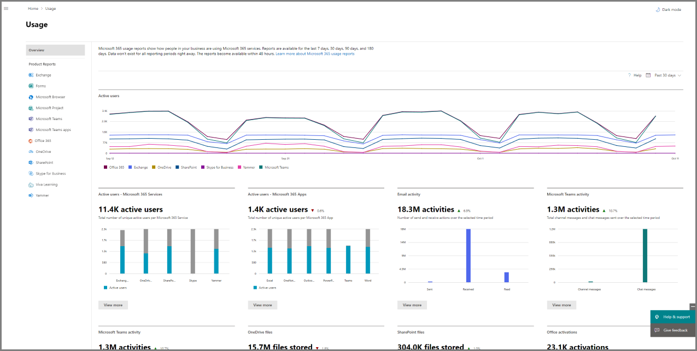
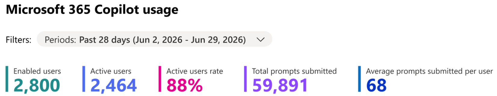
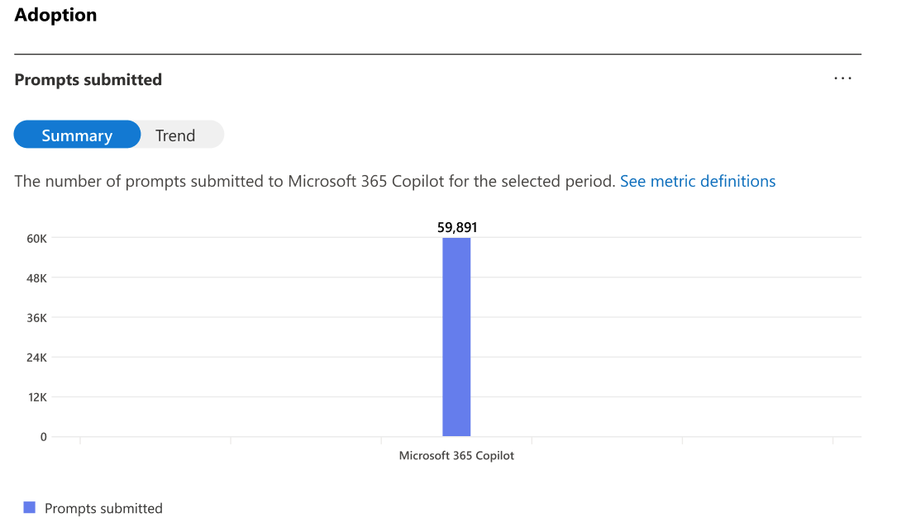
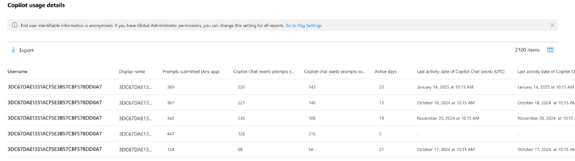
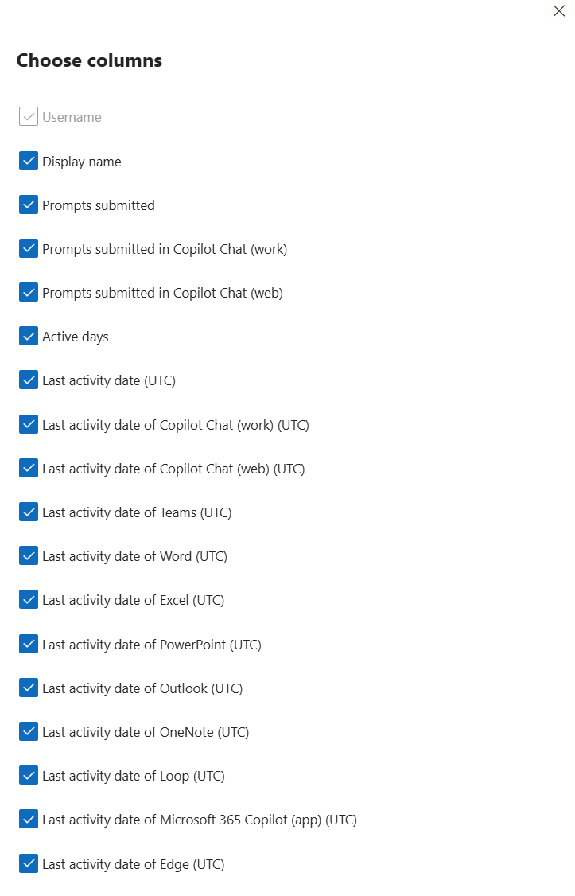
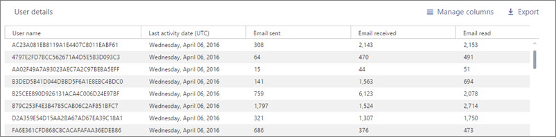

There is a service line hiding inside a report every one of your Copilot customers already owns and nobody has opened. Here is what it told us when we ran it on our own tenant — seven things the channel believes and seven the data doesn’t — whether any of it survives at thirty seats, and how to run it across your whole book instead of one customer at a time.
Somewhere in your book is a customer who bought Copilot on your recommendation, has been paying for it for a year, and cannot tell you what it did for them. You cannot tell them either. When that renewal lands on the owner’s desk next to every other line item, the conversation is not going to be about AI strategy. It is going to be about whether the invoice survives — and if it does not, the Microsoft 365 conversation underneath it gets a lot harder too.
The report that settles that argument is already in their tenant. It has been generating quietly since the day the first licence was assigned, it holds a hundred and eighty days of history, and it takes four clicks and a read-only role to export. In our experience almost nobody in the channel has ever opened it.
We opened ours. Seven of the things we were confident about turned out to be wrong — not slightly wrong, backwards. The users our dashboards scored as healthy were the most stuck. The cohort we trained was overtaken on the newest capability by people who never attended. And the one metric the whole channel quotes as the health measure goes down when a deployment finally starts working properly.
Whether there is a service line here and what it is worth. Whether it works at thirty seats. What Microsoft switches off for your smaller customers. How to run it across the whole book instead of one tenant at a time. And the risk you personally carry the moment you start reading employee activity data. If you only have five minutes, read Section 1.
The exact export path and who can pull it. Ten places the columns do not mean what they say. The build, for large tenants and small. Fourteen copy-paste AI prompts. The segment plays, the meeting script and the objection handling. Hand this half to whoever delivers.
This is not an adoption-analytics page. Adoption analytics is what it uses. What it is actually about is the gap between what you sold and what you can prove — and the fact that closing that gap costs you an afternoon, uses a report you already have access to, and turns into a repeatable engagement you can put on a rate card.
“People seem to like it” is what most partners bring to a Copilot renewal. A sized distribution of that customer’s own users — who is embedded, who tried it and stopped, who is loyal but stuck — is a different meeting entirely, and it is the same meeting every quarter.
Every play in Section 12 is a service, not a SKU. Three of the four are recurring. None of them requires the customer to buy anything from Microsoft first, which means this works on the customers who have already stopped buying.
Run it across the book — Section 5 — and you get a ranked list of which accounts are quietly failing before the renewal notice does it for you. That is the version of this that changes how you plan a quarter.
Less than most partners assume, which is the main reason to say it plainly before anything else.
| Question | The honest answer |
|---|---|
| Who runs it? | Whoever on your team is comfortable in Excel. A service desk lead or a senior engineer, not a data analyst and not you. The analysis is two columns and a nested IF; the judgement is in the conversation afterwards, which is where your senior people belong. |
| What do we build? | One workbook, once. Helper columns, a segment table, a chart, wired to two threshold cells. Section 10 is the build. The first tenant takes an afternoon because you are learning the column definitions; the second takes four minutes. |
| What access do we need? | A read-only role in the customer’s tenant — Reports Reader. Not Global Administrator. That distinction is worth rehearsing, because “we would need global admin” is the single most common reason this conversation dies before it starts. |
| Do we need a tool? | No. Excel and an AI assistant you already pay for. Section 11 is the prompt library that does the analysis for you; Section 5 covers doing it across many tenants without building anything. |
| What is the first deliverable? | A one-page read of the customer’s own population with four sized segments and a recommended next engagement per segment. It is a leave-behind, it is defensible, and it is built entirely from their data rather than from a vendor benchmark. |
Section 2 came out of running this on our own tenant — a large enterprise deployment, over a hundred-and-eighty-day window, cross-referenced against the agent usage report and against a training cohort we could identify by name. That scale matters for one reason only: it is big enough that its distribution is a distribution rather than an anecdote, which is exactly what most published Copilot adoption material is not.
We are not publishing the tenant’s absolute figures. No headcounts, no prompt totals, no scatter of real users. What you get is the shape — percentages, ratios, rates and the direction each relationship runs. That is deliberate, and it is the more useful half. A number from someone else’s tenant is a fact your customer cannot act on and will reasonably discount. A shape is a hypothesis they can test in twenty minutes against their own export, and the moment they run it the conversation stops being about your credibility and starts being about their data.
Every relationship on this page is correlational. Usage telemetry can tell you that a group behaves differently. It cannot tell you why, and it certainly cannot tell you whether anyone got value. A person who submits four hundred prompts and produces nothing is invisible to this data, and so is the person who saved six hours with one prompt. Do not let anyone in the room — including you — convert a correlation on this chart into a causal claim in a slide. The correct posture is: here is a group that behaves differently; let us go and find out why. Section 6 covers what happens when that posture slips.
Each card below has the same four parts: the assumption as it is normally spoken aloud in a partner meeting, what the tenant actually showed, why that changes the commercial conversation, and the specific thing to do with the customer instead. Run them in order — they build. Reversal 1 establishes that training is not the bottleneck; Reversal 7 establishes what a defensible target looks like once you accept that.
They are not using it because nobody showed them how. Book more training.
The quietest group — well over half the licensed base — showed up on fewer than one day in ten across a six-month window. Yet those same people had already opened Copilot in a median of seven different applications. They were never short of exposure. They had tried it, in Word, in Teams, in Outlook, in Excel, and stopped.
You cannot train someone out of a relevance problem. Breadth of exposure with no depth is the signature of a person who tried the tool against their actual job, found no fit, and moved on. Running the same generic session again produces the same result — and burns the credibility you needed for the second conversation.
Ask which job roles the quiet users sit in. Then run one session per role, forty-five minutes, built on that role’s real weekly tasks. Sell it as a role-based use-case workshop — different scope, different price, and it actually moves the number.
Frequent users are the success story. Put them in the case study.
A small segment turned up more often than the company median — and ran the lowest prompts-per-active-day rate anywhere in the tenant, around four. Six months of near-perfect attendance, and a single use case. Every adoption dashboard we had scored them as healthy.
Frequency measures trust, not value. These people believe in the tool — they come back every third day — and nobody has ever shown them a second thing to do with it. Because frequency dashboards count them as a win, they never surface as a problem, which is precisely why they are the cheapest expansion in the building.
Filter for users who are frequently active but low in total prompts. Run a thirty-minute second use case session with only that group. They convert far better than dormant users, and the repeatability of that motion is what justifies an ongoing adoption retainer rather than a one-off workshop.
Training is what drives adoption. Sell more enablement days.
We could identify, by name, an executive cohort that attended a formal enablement summit. Months later that trained cohort sat below their never-attended colleagues on agent adoption — roughly nineteen percent against twenty-five. On every habit measure — frequency, depth, breadth of surfaces — the trained group still led comfortably.
Training does not fail. It seeds. It reliably produces the habit, and then most of the value lands later, on capabilities that did not exist on the day of the session, in people who were never in the room. Which means the customer credits the tool rather than you — unless you own what happens after the session.
Stop quoting training days. Quote what catches the ideas training releases: a recurring intake session where staff bring requests and you triage what gets built. That is a retainer, and it is the thing that makes you the centre of excellence your customer cannot afford to hire.
Target the champions to build a showcase, or the laggards to rescue the investment.
We split users into quartiles by their starting usage and tracked them forward. The third quartile — the competent, unremarkable middle — went from effectively no power users to more than four in ten over eight months. The top quartile grew as well, but it was already there. The bottom quartile barely moved.
Champions do not need you and will adopt anything you ship. Laggards may never move, and burn budget proving it. The already-competent middle is the group that converts — and they will never raise their hand, because from the outside nothing looks wrong with them.
Scope the engagement around the middle fifty percent by usage and name that population explicitly in the statement of work. Same effort, materially better outcome, and a case study that says you turned capable people into indispensable ones rather than that you rescued the bottom.
Prompt volume is the health metric. Down is bad. Put it in the statement of work.
Our most mature cohort’s prompt volume fell by close to a third while improving on every other measure we had. And among broad users, the people who had adopted agents were running fewer prompts than the people who had not.
Prompt volume measures effort, not outcome. Automation removes effort. So the better an agentic deployment gets, the worse that metric looks — and if prompt growth is the acceptance criterion in your contract, you get blamed for the thing that worked. This is the single most expensive misunderstanding in the list.
Before anything agentic ships, get the success criteria changed in writing: tasks completed, active days sustained, surfaces in use, time-to-first-value for a new hire. Sell the measurement baseline itself as a paid first phase. It costs a day and it protects the account.
People using web chat instead of work chat are being lazy, or dodging policy.
Median web-chat share was under one percent — the population overwhelmingly works in grounded, work-mode chat. Users who mixed web and work chat were the strongest segment in the company on every measure. But roughly one user in ten lived almost entirely in ungrounded web chat.
That last group is a search problem, not a policy problem. People go outside when the answer is not findable inside. Copilot did not create that condition — it exposed it, and made it measurable for the first time. Mixing is healthy. Exclusivity is the alarm.
Ask for the work-versus-web split. If a meaningful group lives in web only, that is your opening for a SharePoint permissions and Microsoft Purview assessment — a security-led engagement that stands on its own merits and is routinely larger than the Copilot licences that surfaced it. The Shadow AI Assessment Guide scopes that engagement end to end.
Set an ambitious target. Twenty prompts a day sounds about right.
Among genuinely engaged users, the median was around six prompts per active day. Only about a quarter ever exceeded ten. Twenty a day sits near the ninety-fifth percentile of a top-decile deployment — that is, it is what the most extreme users of an unusually good rollout do, quoted as if it were an average.
Usage is capped by how many suitable tasks a person genuinely has in a working day, not by their enthusiasm. A round number chosen in a kickoff meeting because it sounds motivating pre-arranges the verdict at the review. Nobody will remember who picked it. They will remember that the programme missed it.
At kickoff, derive the target from the customer’s own baseline distribution — move the median from four to eight, and lift the engaged share by a quarter — not from a number someone liked the sound of. Put it in the statement of work: you get judged against a bar you can clear.
Those findings came from a tenant with thousands of users. Most of your customers do not have thousands of users, and it would be dishonest to hand you seven claims without telling you which ones you can actually test on a forty-seat professional services firm and which ones you cannot. Three of them get stronger at small scale. Two of them are not measurable at all below roughly a hundred seats, and if you present them as measured you will be caught.
| Reversal | Testable at SMB scale? | What changes when the tenant is small |
|---|---|---|
| 1 · Relevance, not training | Stronger | Surfaces-touched is a per-user count, so it works at any size. And the effect is more pronounced: a thirty-person business has fewer distinct job shapes, so a single badly-aimed generic session misses proportionally more of the company. This is your best small-tenant finding. |
| 2 · Loyal but stuck | Yes | Fully measurable — but the band may be two or three people. That is a naming exercise, not a segment. Treat it as a list of individuals to invite to one short session, and never present three people as a percentage. |
| 3 · Training got overtaken | Rarely | Needs an identifiable trained cohort and an untrained control group. Most SMB customers trained everyone or nobody, so there is no comparison to make. The finding still matters commercially — see the note below — but do not claim to have measured it in their tenant. |
| 4 · The middle moves | No | Requires quartiles and two points in time. At thirty seats a quartile is seven or eight people and one person changing jobs moves the whole result. Do not run quartile analysis below about a hundred licensed users. Use it as a targeting principle, not as a measurement. |
| 5 · Falling prompts can be good | Later | Needs two exports separated by months. You cannot test it on day one — which is the argument for pulling the first export now, before anything else, so the baseline exists when you need it. The commercial point stands regardless: never write prompt growth into a contract. |
| 6 · Grounding tells you about the data estate | Stronger | Per-user work-versus-web columns work at any size, and small businesses tend to have messier, more improvised SharePoint estates than large ones. The governance engagement this opens is frequently larger than the Copilot licences that surfaced it. |
| 7 · The ceiling is low | Partly | The median and the maximum are meaningful at any size. Percentiles are not — a ninety-fifth percentile of twenty-five people is one person. Quote the median and the range, never a high percentile, and the finding still does its job of replacing an invented target. |
If a meaningful share of your adoption revenue is training days, that finding reads as an attack on your own business. It is not, and the distinction matters: training is not the thing that fails — it is the thing that is priced wrong. It reliably produces the habit, and then most of the value lands months later, on capabilities that did not exist on the day of the session. Sold as a day, you capture the cost of the room and none of the compounding. Sold as a recurring intake — a standing session where staff bring the requests that training released and you triage what gets built — you capture the part that keeps growing. Same delivery motion, same people, different contract. The Revenue Runway and the Offer Ladder both set out what that repackaging looks like.
The through-line: the report they already have is the pipeline nobody reads.
Every play on this page is about agent access — turning on what already exists and making it findable — not about agent authorship. Copilot Studio is not the entry point, and a customer whose licensed users are drifting will not be rescued by a custom agent. Build the access motion first; the authorship conversation is the second engagement, not the first.
Yes — but not the way it works at three thousand, and a partner who runs the enterprise version of this method on a thirty-seat tenant will produce a chart that looks authoritative and means nothing. Thirty dots is not a distribution; it is a list wearing a scatter plot as a costume. This section is the small-tenant method, and it is the section most of your customers actually need.
Plot the scatter, split on the tenant’s own medians, report segments as percentages. There are enough people in each quadrant that the shape is real and a single individual cannot move it. This is the method in Sections 7 and 10.
Do not plot it. Do not use the tenant median as a threshold — on thirty rows the median moves when one person takes annual leave. Use fixed, externally-defined bands and a ranked table of every licensed user. Everyone fits on one page, which turns out to be an advantage.
This is the part that makes the small-tenant version defensible, and it is worth knowing even if you only ever work with large tenants: Microsoft segments Copilot users on exactly the same two axes this method uses. The Copilot Dashboard in Viva Insights defines its user categories as follows — note that both tests are applied together, one for depth and one for frequency.
| Microsoft’s category | Depth test | Frequency test |
|---|---|---|
| Power user | Averages 15 or more Copilot actions per week | and used Copilot in at least 9 of the past 12 weeks |
| Habitual user | Averages between 1 and 14 Copilot actions per week | and used Copilot in at least 9 of the past 12 weeks |
| Novice user | At least 1 Copilot action in the past 12 weeks | and did not use Copilot in at least 9 of the past 12 weeks |
That is frequency multiplied by depth, published by Microsoft, with fixed numbers that do not depend on how many people are in the tenant. Which is precisely what a thirty-seat customer needs. It also settles a question that comes up in every one of these meetings: whose definition of “power user” is this? Not yours.
Microsoft’s definitions are stated in Copilot actions per week over a rolling twelve weeks. The admin center export gives you prompts submitted and active days over a window you choose. Those are related but not identical — a Copilot action is not always a chat prompt (see Trap 02 in Section 9), so the export systematically undercounts against Microsoft’s definition, particularly for Excel-heavy and meeting-heavy users. Say that out loud when you present it. You are applying Microsoft’s thresholds to the nearest data you can actually get, and being the person in the room who names the approximation is worth more than the precision you lost.
admin.microsoft.comPull a 90-day window — roughly thirteen weeks, which lines up with Microsoft’s twelve-week frame better than the 180-day window does. Then apply two fixed lines:
Frequency line Active Days >= 9
approximates "used Copilot in at least 9 of 12 weeks"
conservative: understates people whose activity clusters
Depth line Prompts submitted (any app) / 13 >= 15 per week
i.e. total prompts >= 195 over the 90-day window
approximates "15 or more Copilot actions per week"
conservative: a prompt is not the same as an action
Four bands fall out, and they map onto the four segments used throughout the rest of this document:
| Band | Test | What it means, and what you do |
|---|---|---|
| Embedded = Champions | Passes both lines | Frequent and deep. Check their agent activity before anything else — in our tenant a large share of exactly these people had never used an agent once. |
| Loyal but shallow = Habitual but shallow | Passes frequency, fails depth | Microsoft’s own “habitual” category. They trust it and know one thing to do with it. Highest-converting group you will find. One short session, one new task. |
| Project-driven = Bursty | Fails frequency, passes depth | Rare but intense. Find the recurring process next to their project work. Check their grounding — this band skews ungrounded. |
| Drifting = Drifting | Fails both | Split it further: those who have touched several Copilot surfaces tried it and stopped, and are recoverable with role-based use cases. Those who have touched none never started, and may simply be a mis-assigned licence. |
A ranked table of every licensed user, sorted by band then by prompts, with the anonymized identifier, active days, prompts, prompts per active day, surfaces touched, and the band label. At forty seats that is a single page, and it has a property the enterprise version does not: the customer can look at the whole company at once. An owner-operator reading forty rows will start narrating them — “that’s the finance team, that one’s on maternity leave, those two are our estimators” — and that narration is the most valuable twenty minutes in the engagement. You will not get it from a scatter plot.
Never report a band of fewer than five people as a group finding. “Forty percent of your bursty users are ungrounded” is a sentence about two people, and it is the kind of sentence that gets a partner removed from an account. Below five, report the count and nothing derived from it — no percentages, no medians, no comparisons.
Below about ten licensed users, do not run this as analysis at all. Read the list, then go and talk to all ten of them. You will learn more in an hour of conversation than the export can tell you, and dressing a nine-row table up as a segmentation is the sort of thing customers remember for the wrong reason.
Sooner or later somebody in the room says “doesn’t Microsoft already give us a dashboard for this?” For an enterprise the answer is yes, and it is genuinely good. For most of your customers the answer is partly, and the useful half is switched off — and knowing exactly which half is the strongest argument in this entire document for why a partner is needed at all.
The Copilot Dashboard in Viva Insights is available to any customer with a Microsoft 365 or Office 365 business or enterprise subscription and an active Exchange Online account. No paid Viva Insights licence is required, and no Copilot licence is required to view it. Data processing starts once the tenant has at least one assigned Copilot licence, and takes up to seven days. So far, so good for a small customer.
Then comes the tier line.
| Capability | Under 50 Copilot licences | 50 or more Copilot licences, or 50+ Viva Insights licences |
|---|---|---|
| Copilot and Copilot Chat adoption insights | Yes | Yes |
| Readiness page | Yes | Yes |
| Agent-related insights, including the Agent Dashboard | No | Yes |
| Benchmarks | No | Yes |
| Group-level metrics and HR filters | No | Yes |
| Intelligent summaries | No | Yes |
| Manager group-level view and delegation | No | Yes |
| Survey-based sentiment metrics | No | Yes |
Read that column again, because it is the whole argument. For a customer with thirty Copilot seats, Microsoft’s own analytics surface will not tell them anything about agents, will not let them cut by department, and gives them nothing to compare themselves against. Three of the seven reversals in Section 2 are simply not visible to them through the product.
“They do — above fifty Copilot seats. Below that, the agent insights, the group-level cuts and the benchmarks are all switched off, and the dashboard that’s left reports a single active-user rate that collapses how often and how deep into one number. That’s the number that makes a loyal-but-stuck user look identical to your best performer. The admin center export is the only place you can un-collapse it, and it works at any tenant size. That’s what we do with it.”
Everything so far describes one customer. That is the wrong unit for the person running the business. You do not have a Copilot tenant; you have a book — some number of customers, a subset of whom bought Copilot, and no current way of knowing which of those is quietly failing. This section is the version of the method that operates on the book, and it is the one that changes how you plan a quarter.
Less than the automation instinct suggests. Under a granular delegated admin privileges relationship, request Reports Reader in each customer tenant — a read-only role, the least-privileged one that can read usage reports, and a far easier ask than the administrative roles partners typically hold. Then, signed in against each customer tenant in turn, it is the same four clicks every time — Reports › Usage › Microsoft Copilot › Copilot, set the period, and Export the user-level table. Section 8 has the column detail and the traps; you should not have to page back to it once you have done this twice.
Twenty tenants at four clicks each is not a project. It is a recurring calendar entry for whoever owns the customer-success function, and it produces the single most useful artefact your leadership team will look at all quarter. Resist the urge to build something first. Partners who start by designing a multi-tenant collector generally never get to the part where the data changes a decision.
One row per Copilot customer. Every column below comes straight out of the export or out of the segment table you already built — nothing here requires new analysis, only that you keep the results in one place instead of one workbook per customer.
| Column | Where it comes from | What it tells you as an operator |
|---|---|---|
| Licensed users | Export row count, reconciled against assigned licences | Deal size, and whether the tenant is above or below the thresholds in Sections 3 and 4. |
| Never-active share | Users with zero prompts and zero active days | The most defensible number in the whole exercise, and the one that gets an owner’s attention fastest. This is the renewal risk, quantified. |
| Drifting share | Fails both bands, split by surfaces touched | How much of the estate tried it and stopped — recoverable — versus never started, which may be a licensing error rather than an adoption problem. |
| Embedded share | Passes both bands | Whether there is anything to build on. A tenant with no embedded users needs a different first engagement from one with a healthy core. |
| Champions without agent access | Embedded band, cross-referenced to the agents report | The fastest agentic win in the account, and the one that does not need anything built. Usually the highest-value cell in the table. |
| Web-only share | Grounding ratio above 90 percent | Your security-led opening. Frequently the largest engagement on the row, and it has nothing to do with Copilot licences. |
| Months to renewal | Your own systems, not the export | The column that turns the rest of the row into a sequencing decision. |
| Next play | Section 12 | One of four. Assign an owner and a date, or the whole exercise stays interesting and never becomes revenue. |
Sort by never-active share descending and filter to renewals inside two quarters, and you have your priority list. Sort by champions-without-agent-access and you have the list of accounts where a two-week engagement produces a visible, quotable result. Those are two different quarters, and the table lets you choose deliberately instead of by whoever shouted loudest.
The obvious next step is to collect this through Microsoft Graph across all tenants on a schedule. The endpoint exists and is documented in Section 8.4. There is, however, a documented restriction that will stop a common design pattern dead, and it is better to know now than after a sprint:
Microsoft states that calling Microsoft Graph from a preconsented partner-managed CSP application is “only supported for directory resources (such as user, group, device, organization) and Intune resources.” The usage-report endpoints are not directory resources. So the pattern of a single preconsented app iterating your customer list and pulling reports app-only is not something we can tell you works — and we are not going to publish an architecture we have not proven.
What is documented and does work is delegated access: an agent signs in with their partner account against the customer tenant as the target, holding the appropriate delegated admin privileges. Whether that path supports the reports endpoints at the scale you want is a spike worth half a day against one friendly tenant before it is worth a sprint. Treat automation as an optimisation of a motion that is already running manually, never as the thing that has to work first.
Everything above treats the export as a commercial instrument. It is also a record of how thirty named individuals spent their working days, and the moment you hand a small-business owner a ranked list of their staff, you have created something with a use you did not intend. Partner executives carry this risk personally and it is almost never written down, so here it is.
This analysis exists to find where the tool has not been made useful yet. It does not measure effort, contribution, productivity or performance, and it cannot — a person who submits four hundred prompts and produces nothing looks like a star in this data. If it is ever presented as a measure of how hard someone works, it has been misused, and you will be the one who supplied it. Say this in the room, before the table goes on the screen, every single time.
Microsoft’s usage reports conceal user names, display names, groups and sites by default. Every segment size, every band and every chart in this method works perfectly against hashed identifiers, because the analysis is distributional.
Default position: you never ask for names. If the customer wants role-level insight, ask their admin to add a department or job-family column on their side and hand you the file with identities already stripped — see Section 8.5. That ask succeeds far more often, and it leaves no trace to explain.
De-anonymizing is not a setting on your export. It requires Global Administrator, it is tenant-wide, it applies retroactively across every usage report including Graph, Power BI and the Teams admin center, and showing identifiable user information is a logged event in the Microsoft Purview audit log.
If it happens, it should be the customer’s decision, made by their Global Administrator, with a written reason, and switched back afterwards. Never request it casually to make your analysis tidier.
In a twenty-five person company, “the three people in the drifting band who have never opened Copilot in Excel” is an identifiable description whether or not the names are showing. Pseudonymisation does very little work at this size, and assuming otherwise is the most common mistake partners make with small tenants.
Report bands, never rows, to anyone other than the person who owns the data. And apply the five-person floor from Section 3 to every derived figure without exception.
They will. In a forty-person business the owner knows exactly who the bottom rows are before you finish the sentence, and they will ask you to confirm it.
The answer is that it is their tenant and their data and they can pull it themselves — and that you would advise against using it that way, because the low rows are overwhelmingly people whose job Copilot has not been fitted to yet, which is a management-of-the-rollout problem rather than a management-of-the-person problem. Say the second half. It is true, it is useful, and it is what stops your analysis becoming somebody’s disciplinary evidence.
Rules on processing employee activity data vary by country and sometimes by workforce agreement — works councils, collective agreements and local employment law can all bear on this, and some of your customers will have obligations they have never thought about in this context.
Put one line in the engagement paperwork stating that the customer confirms they are permitted to share employee usage data with you for this purpose. You are not qualified to make that determination on their behalf, and you should not try.
You are about to hold exports containing staff activity records for dozens of organisations. Note also that when a customer deletes a user account, Microsoft removes that user’s usage data within 30 days — your copy will outlive theirs unless you do something about it.
Decide where these files live, who can open them, and when they are destroyed, before the first one lands. A quarterly cadence across a book of customers accumulates this faster than anyone expects.
Because it is not a delivery detail. The person who decides whether the firm runs this motion is the person who owns the consequence if it is done badly, and the failure mode is not a bad chart — it is being the supplier of record for a document that got someone managed out. The rules above cost nothing to follow and they are considerably easier to adopt at the start than to retrofit after a customer’s HR director asks where the list came from.
Every Microsoft 365 Copilot usage export contains the same two numbers about every licensed person: how often they show up, and how deep they go when they do. Active days, and prompts submitted. On their own, each one is a vanity metric that has been misread in every quarterly business review since Copilot shipped. Plotted against each other, they stop being metrics and become a segmentation — and the install base sorts itself into four groups without anyone having to be clever about it.
The reason this works is that the two axes fail independently. Someone can be present without being deep, or deep without being present, and those are not the same customer problem, do not have the same cause, and do not get fixed by the same engagement. Collapsing them into a single “active users” percentage — which is what every adoption dashboard does — destroys exactly the information you needed.
The thresholds are the only judgement call in the whole method, and it is worth being explicit about them in front of the customer rather than letting them look arbitrary. There are two defensible ways to set them, and one indefensible one.
| Method | How you set it | When to use it |
|---|---|---|
| Distributional | Put both lines at the tenant’s own median — the median active days, and the median prompts. By construction you get four non-empty groups sized relative to that population. | The default. Always defensible, never argued with, and it makes cross-tenant comparison meaningless in a good way — nobody can accuse you of grading them against someone else. |
| Operational | Pick lines that mean something in English. “Active on at least every third working day” for frequency; a prompt count that represents sustained rather than exploratory use for depth. | When the customer needs the segments to map onto a policy or a licence-reclamation decision, where a human has to be able to justify the line to their own management. |
| Borrowed | Copying our thresholds, or anyone else’s, out of a deck. | Never. A threshold from another tenant encodes that tenant’s window length, licence mix and rollout date. It will silently mis-sort your customer’s population and you will not notice. |
Prompt counts span several orders of magnitude in every tenant we have looked at — a handful of people generate hundreds of times what the median user does. On a linear axis those few compress everyone else into a stripe along the bottom and the chart says nothing. On a log axis the structure appears. One consequence to handle before it embarrasses you: a logarithmic axis cannot plot zero. Users with no prompts at all have to be either charted at one or excluded and counted separately — and if you exclude them, say so on the slide, because in most tenants that is not a rounding error.
The shares below are from the tenant we ran this on, given as percentages of population and of total activity. They are here to show you the characteristic shape — a large quiet majority generating a small minority of the activity, and a concentrated group generating most of it. Your customer’s percentages will differ. The shape rarely does.
Rare visits, shallow sessions — and in our tenant, well over half the licensed population. The trap is reading this as ignorance. These people had already touched Copilot across a median of seven surfaces. Exposure happened. A reason to come back did not.
They appear rarely and go extremely deep when they do — the highest prompts-per-active-day rate in the tenant by a wide margin. Capable, project-driven, and not yet embedded in anything that happens weekly.
Present more often than the company median, running the lowest rate per active day anywhere. Months of loyalty to a single use case. Small by headcount, near-invisible on a frequency dashboard, and the most underrated group in the tenant.
Frequent and deep, roughly three in ten of the population, and generating the overwhelming majority of everything that happens. Here is the finding that pays for the meeting: a large share of them had never once used an agent. Not resistance — nobody had made one findable.
In our tenant the single largest agentic opportunity was not a group that needed agents built. It was the champions — the most engaged, most capable, highest-volume users in the company — who had never used an agent at all. If that holds in your customer’s tenant, and it usually does, then the first agentic engagement is an enablement and discoverability project measured in days, not a development project measured in months. Check it before anyone writes a Copilot Studio line into a proposal. Prompt 10 in Section 11 tests it directly.
This is the part that makes the asset usable rather than merely interesting. The customer’s admin already has everything you need, and in most cases has never been asked for it. Four clicks, one CSV. The screens below are Microsoft’s own, reproduced unaltered so you can recognise them before you are sitting in front of a customer’s tenant.
Viewing usage reports does not require Global Administrator, and you should say so early, because “we’d need to give you global admin” is the single most common reason this conversation dies. Any one of these roles is enough: Reports Reader, Usage Summary Reports Reader, AI Administrator, Exchange Administrator, SharePoint Administrator, Teams Administrator, Teams Communications Administrator, User Experience Success Manager, or Global Administrator. Reports Reader is the right ask — it is read-only, it is purpose-built for this, and it is a five-minute change.
admin.microsoft.com

If Reports is not in the navigation menu, select Show all first. At the top of the report, set the timeframe filter — the usage report supports 7, 28, 90 or 180 days. Take 180. You are looking for the shape of a distribution, and a seven-day window will show you noise and call it a trend.
Scroll to the user-level table, select Choose columns and switch on everything, then select Export. That produces the CSV. Note that the ellipsis menu on each individual chart also offers an Export — that exports the chart’s aggregate, not the user detail. It is the table export you want.



| Column | What it actually measures | Why you care |
|---|---|---|
| Prompts submitted (any app) | Total prompts the user submitted across all in-scope host applications in the selected timeframe. | Your depth axis. |
| Active Days | The number of days the user submitted prompts to Copilot Chat within the timeframe. | Your frequency axis. Read the definition twice — see Trap 01. |
| Copilot Chat (work) prompts submitted | Prompts submitted to grounded, work-mode chat. | Half of the grounding ratio in Reversal 6. |
| Copilot Chat (web) prompts submitted | Prompts submitted to ungrounded web chat. | The other half. The ratio is the finding, not either number alone. |
| Last activity date (UTC) | Most recent date the user sent a message to Copilot Chat in any host app. Fixed regardless of the window you selected. | Separates “never started” from “stopped in month two” — two completely different conversations. |
| Last activity date of Teams / Word / Excel / PowerPoint / Outlook / OneNote / Loop Copilot (UTC) | Per-application last-touch dates, each independent of the selected window. | Count the non-blank ones per user and you have a surfaces-touched score — the breadth measure behind Reversal 1. This is the column set nobody uses. |
| Last activity date of Copilot Chat (work) / (web) / Microsoft 365 App / Microsoft Edge (UTC) | Last-touch dates for each chat entry point. | Identifies the web-only population even when their prompt counts are small. |
| User name · Display name | Principal name and full name — anonymized by default. | You do not need these to build the chart. See 8.5 before asking for them. |
The same data is available through Microsoft Graph, which is the right answer if you are running this across a portfolio of tenants rather than one account. There is a version trap here that will cost you an afternoon if you miss it.
GET https://graph.microsoft.com/v1.0/copilot/reports/
getMicrosoft365CopilotUsageUserDetail(period='D180', version='v2')
Permission required is Reports.Read.All — delegated or application. The response is a CSV stream.
Version 1 — which is the default if you omit the parameter — does not contain prompt counts or active days. It returns refresh date, principal name, display name and a set of per-app last-activity dates, and nothing else. Both axes of this entire method are missing. You must pass version='v2' to get Prompts submitted for all apps, Active Usage Days for all apps, the work/web chat prompt split, and Copilot Agent Last Activity Date. Also note the period values differ by version: v1 accepts D7 D30 D90 D180 ALL, v2 accepts D7 D28 D90 D180 ALL.

By default Microsoft 365 usage reports conceal user names, display names, group names and site names. Every chart and every segment size in this method works perfectly with anonymized data, because the analysis is distributional. Ask for de-anonymization only when you have a specific, stated reason — almost always the same one: joining usage to job role or department so that Reversal 1 becomes actionable.
If it is genuinely needed, the setting is Settings › Org Settings › Services › Reports, and it is the checkbox “Conceal user, group, and site names in all reports”. Three things to say out loud before anyone unticks it:
Rather than de-anonymizing the whole tenant, ask the customer’s admin to add a single column to the export on their side — department, job family, or business unit — and hand you the file with the names already stripped. You get the role dimension that makes Reversal 1 sellable, they never flip a tenant-wide privacy setting, and nobody has to explain an audit-log entry. This ask succeeds far more often than the other one.
The export is generous and the column names are plain English, which is exactly what makes it dangerous. Several columns do not measure what their name implies, and two of them will produce a confidently wrong slide if you take them at face value. Read this section before you build anything — every item here comes from Microsoft’s own documentation, and every one of them is the kind of thing a customer’s admin will catch in the meeting if you do not catch it first.
Microsoft defines Active Days as the number of days the user submitted prompts to Copilot Chat in the window. It is not the number of days they used Copilot in general. A person who uses Copilot in Word every single morning and never opens chat can therefore show a low — even zero — active-day count while being a genuinely heavy user.
What to do: call your horizontal axis chat frequency, not usage frequency, and cross-check quadrant A against the per-app last-activity columns before you describe anyone as dormant. Some of your “drifting” users are Word-only regulars, and they are a different conversation entirely.
Opening the Copilot pane is not activity — Microsoft counts an intentional action, such as submitting a prompt. And the counting is not uniform across apps: Edit with Word counts toward “prompts submitted in Copilot Chat (work)”, while Edit with Excel and Edit with PowerPoint do not. Teams meeting features such as Intelligent Recap, Interpreter and Facilitator count toward active usage without generating chat prompts at all.
What to do: never present prompt count as a measure of effort expended. It is a measure of one specific interaction pattern, and it under-counts Excel-heavy and meeting-heavy populations systematically.
The user-level table shows everyone who held a Copilot licence at any point in the past 180 days — including people whose licence was removed and people who never had a single active day. That is a reasonable design choice for an audit and a terrible one for an adoption percentage.
What to do: reconcile the export row count against currently assigned licences under Billing › Licenses before you compute any rate. Otherwise quadrant A is inflated by former employees and reassigned seats, and you will present an adoption failure that is partly a spreadsheet artefact.
The Copilot usage report gives you 7, 28, 90 or 180 days. The agents usage report currently gives you 7 or 30 days only. Microsoft has said longer windows are coming, but today they are not there.
What to do: never put an agent-adoption percentage and a usage percentage on the same slide as though they described the same period. State both windows explicitly, every time.
admin.microsoft.comThe original agent usage report covered only agents your organisation built — Copilot Studio, Agents Toolkit, agent builder — and explicitly excluded agents built by Microsoft or by partners. That report is now deprecated in favour of a newer one that does include Microsoft and third-party agents, breaks usage down by creator type (Your Users, Your org, Microsoft, Third-party), and covers unlicensed Copilot Chat users as well as licensed ones.
What to do: check which report you are looking at before comparing anything to a historical figure. An “agent adoption” number from the old report and one from the new report are not the same measurement, and the new one will look dramatically higher for a reason that has nothing to do with adoption. Note too that SharePoint agents used inside Teams are still not counted.
Copilot activity for a given day typically appears within 48 hours, and the system re-validates and backfills the previous three days on a rolling basis — so historical figures can change under you. Separately, client-side events from Word, Excel, PowerPoint, OneNote and Outlook can upload late, which makes those per-app last-activity dates blank or stale for reasons that have nothing to do with user behaviour.
What to do: stamp every chart with the report refresh date and the window, and do not re-run a comparison inside a three-day boundary and call the difference a trend.
Microsoft documents a specific edge case: if a user used Copilot within 24 hours of the licence being assigned and never used it again, their last-activity date can be empty. It looks identical to someone who never started.
What to do: treat blank-with-nonzero-prompts as a data artefact, not as a user. It is a small population, but it is exactly the kind of row that turns into an argument in front of the customer’s admin.
With concealment on — the default — the principal-name column is a hash. You can count, segment and plot; you cannot join to HR data, department lists or a training attendee roster. Separately, when a user account is deleted, Microsoft removes that user’s usage data within 30 days, so the chart totals and the user table will not reconcile for any period covering a departure.
What to do: decide the role-join question before you export — see Section 8.5 for the version of that ask which does not require a tenant-wide privacy change.
Someone will suggest pulling this from Purview audit instead, because it feels more complete. Microsoft states plainly that audit data is built for security and compliance, is not intended as the basis for usage reporting, and that aggregates built on it — prompt counts, active-user counts — may not reconcile with the official reports. They will not provide guidance on making them match.
What to do: use the usage report or the Copilot Dashboard in Viva Insights. Use audit for oversharing discovery and compliance, which is a genuinely valuable but completely separate engagement.
A logarithmic depth axis cannot render a user with zero prompts. And prompts-per-active-day — the single most useful derived measure in this whole method — divides by a column that is legitimately zero for a large part of the population.
What to do: wrap the rate in IFERROR, plot zero-prompt users at one or exclude them explicitly, and either way state on the chart how many rows were excluded and why. A quietly dropped population is how an honest analysis turns into a misleading one.
Nine of the ten items above make your numbers look worse than reality if you ignore them — inflated dormant populations, undercounted Excel users, missing agent categories. That asymmetry matters commercially: an unexamined export systematically over-states failure. If you walk into a review with raw figures, you will be arguing that the customer’s investment is in worse shape than it is, and the admin in the room who knows these definitions will dismantle you. Doing the corrections is not pedantry. It is the difference between being the analyst and being the vendor with a scary chart.
copilot-adoption-audit-workbook.xlsx — no BI tool, no Power BI licence, no data engineer. It detects its own columns by header text, so it does not matter which columns the admin switched on or what order they came out in, and it applies the five-person suppression rule for you.
How to populate it with your data:
The rest of this section is what the workbook is doing, written out. Read it if you would rather build your own, if you need to explain a number to a customer’s admin, or if you simply do not want to trust a spreadsheet you did not write. The formulas assume your export is open with headers in row 1 and data starting in row 2, and are written with column letters spelled out in a legend so substitution is mechanical.
Legend — replace with your actual column letters E = Prompts submitted (any app) ← your depth axis F = Active Days ← your frequency axis G = Copilot Chat (web) prompts submitted H = quadrant label (new helper column you will add) I = prompts per day (new helper column you will add) J = plot depth (new helper column you will add) Assume data runs to row 5000 — extend to your row count.
Put these somewhere out of the way — say M1 and M2 — and label them. Everything downstream points at these two cells, so changing a threshold re-sorts the whole population instantly, which is exactly what you want when the customer asks “what if we drew the line somewhere else?”
M1: =MEDIAN(F2:F5000) frequency threshold — median active days M2: =MEDIAN(E2:E5000) depth threshold — median prompts
This is the whole segmentation. Put it in H2 and fill down.
H2: =IF(F2>=$M$1,
IF(E2>=$M$2,"D Champions","C Habitual shallow"),
IF(E2>=$M$2,"B Bursty","A Drifting"))
Then the two derived columns — the rate that exposes Reversal 2 and 7, and a plot-safe depth value that survives a log axis.
I2: =IFERROR(E2/F2,0) prompts per active day J2: =MAX(E2,1) plot depth — log axis cannot render 0
Build this little block anywhere. It is the table you will actually put in front of the customer — the chart is the hook, but this is the argument.
count =COUNTIF($H$2:$H$5000,"D Champions")
% of people =COUNTIF($H$2:$H$5000,"D Champions")/COUNTA($H$2:$H$5000)
% of all
activity =SUMIF($H$2:$H$5000,"D Champions",$E$2:$E$5000)/SUM($E$2:$E$5000)
median rate =MEDIAN(IF($H$2:$H$5000="D Champions",$I$2:$I$5000))
array formula — Ctrl+Shift+Enter on older Excel;
there is no MEDIANIFS.
Repeat for the other three labels. The gap between “% of people” and “% of all activity” is the finding. When one segment is a minority of headcount and a large majority of activity, you have just told the customer where their entire return is concentrated — and how thin it is.
Select column F and column J together, then Insert › Charts › Scatter. Right-click the vertical axis, choose Format Axis, tick Logarithmic scale and set the minimum to 1. Shrink the markers and drop their opacity — at a few thousand points the default marker size produces a solid blob and hides the structure you are trying to show.
For the two threshold lines, add two small helper series of two points each — one vertical, one horizontal — and format them as dashed lines with no markers:
vertical line x: =M1, =M1 y: 1, =MAX(J2:J5000) horizontal line x: 0, =MAX(F2:F5000) y: =M2, =M2
The report refresh date. The window length. The row count, and the count of any rows you excluded. And one line stating that the relationships shown are correlational. Those four annotations are what separate a chart the customer’s admin trusts from one they spend the meeting attacking.
| Measure | Formula | What it exposes |
|---|---|---|
| Grounding ratio | =IFERROR(G2/E2,"") | Web-chat share of the user’s total prompts. Sort descending and the ungrounded-only population appears at the top — Reversal 6, and the opening for the governance engagement. |
| Surfaces touched | =SUMPRODUCT(--(L2:S2<>""))over your per-app last-activity columns | How many different Copilot surfaces this person has ever opened. High surfaces with low depth is the exposure-without-relevance signature behind Reversal 1. |
| Realistic ceiling | =PERCENTILE.INC($I$2:$I$5000,0.5)=PERCENTILE.INC($I$2:$I$5000,0.75)=PERCENTILE.INC($I$2:$I$5000,0.95) | The median, upper-quartile and extreme prompts-per-day rates in this tenant. This is the evidence you use to replace an invented target with a defensible one — Reversal 7. |
Every formula above points at named threshold cells and generic column letters. Build the workbook once, with the helper columns, the segment table and the chart already wired, and each new engagement becomes: paste the export, fix the column references, read the answer. The second tenant takes four minutes. That is the difference between an interesting exercise and a repeatable service — and a repeatable service is the thing you can put a price on.
Everything above assumes enough people that a median is stable and a scatter is readable. Under roughly sixty licensed users it is not, and Section 3 explains why. The small-tenant build is shorter, because you are not drawing anything.
Pull a 90-day window rather than 180 — it lines up better with the twelve-week frame Microsoft’s own definitions use. Then replace the two median cells with two fixed constants and change one formula:
M1: 9 frequency line — active days, fixed
M2: 195 depth line — prompts over 90 days
(15 per week × 13 weeks)
H2: =IF(F2>=$M$1,
IF(E2>=$M$2,"Embedded","Loyal but shallow"),
IF(E2>=$M$2,"Project-driven","Drifting"))
K2: =IF(H2="Drifting",
IF(SUMPRODUCT(--(L2:S2<>""))>=3,"tried and stopped","never started"),"")
That last column is the one that earns its place at small scale. It splits the drifting band into people who explored Copilot across several surfaces and gave up — recoverable with a role-based session — and people who never opened it at all, who may simply be holding a licence that should be reassigned. Those two groups get opposite recommendations, and at forty seats the difference between them is usually three or four people you can name.
Then sort by band, then by prompts descending, and print it. That table is the deliverable. No chart, no quadrant diagram, no percentages on any band with fewer than five people in it.
Do not maintain two templates. Put the median formulas and the fixed constants in adjacent cells with a switch, so the same workbook serves a six-hundred-seat customer and a thirty-seat one and you are never guessing which version you are looking at. Label the sheet with which mode produced the numbers — it will be the first question anyone asks six months later, and Section 5’s book ranking depends on knowing that the rows are comparable.
Section 6 gets you the chart. This section gets you everything else — the segment profiles, the cohort tests, the account plan and the meeting scripts — by handing the export to an AI tool and asking the right fourteen questions. Each prompt below is written to be pasted verbatim, and each one is deliberately constrained: it tells the model what to compute, what format to answer in, and what to do when it cannot answer. That third instruction is the one that matters, and it is the one everybody leaves out. On a small tenant, P02 and P03 carry the fixed-threshold option and the five-person suppression rule from Section 3 — they are not optional, and the model will not apply them unless you leave them in.
Get written permission, and pick the tool deliberately. The best option by a wide margin is to run these inside the customer’s own tenant — Copilot in Excel on the open workbook, or Copilot Chat in work mode with the file attached — so the data never leaves their boundary and the whole exercise sits under their existing agreement. Failing that, use a business-tier AI account with data-training disabled, never a consumer one.
One genuine advantage you have here: the export is anonymized by default, so unless someone has turned concealment off, the file contains hashes rather than names. If you did de-anonymize for a role join, strip the name and principal-name columns before the file goes anywhere — the analysis below never needs them.
Run this first, always. It catches the wrong export version, the wrong window, and the licence-removed rows from Trap 03 before any of them contaminate a number you say out loud.
You are a data analyst. Attached is a Microsoft 365 Copilot usage report user-detail export. Do not analyse behaviour yet. First, audit the file and report only: 1. The exact column headers present, in order. 2. Row count, excluding the header. 3. Whether the columns "Prompts submitted (any app)" and "Active Days" are present. If either is missing, stop and tell me the export is version 1 rather than version 2 and cannot be used for this analysis. 4. The report refresh date and the report period length, if present in the file. 5. For each column: count of blanks, count of zeros, minimum, median, maximum. 6. Count of rows where every activity column is blank or zero - these are users who were licensed at some point in the window but never active. 7. Any row that looks like a data artefact: a blank last-activity date combined with a non-zero prompt count. Present this as a plain table. Do not infer, estimate, or fill in anything that is not in the file. If a value cannot be computed, write "not available" rather than guessing.
Stops the model — and you — importing a threshold from a deck. The output of this prompt is the only pair of numbers the rest of the analysis is allowed to use. On a tenant under about sixty licensed users, take Option C — a median computed on thirty rows moves when one person takes annual leave. See Section 3.
Using only this file, propose the two threshold values that will split this population into four usage quadrants. Give me two options and the numbers for each: OPTION A - Distributional. The median of Active Days, and the median of Prompts submitted (any app). Report both values. OPTION B - Operational. A frequency threshold that corresponds to being active on roughly every third working day across this window, and a depth threshold that separates sustained use from exploration. State the reasoning for each number in one sentence, and state clearly that these are judgements rather than statistics. For each option, show how many users fall into each of the four quadrants: high frequency + high depth, high frequency + low depth, low frequency + high depth, low frequency + low depth. OPTION C - Fixed, for small tenants. Do not compute these from the file; use them as given, and say so: frequency line = Active Days >= 9 over a 90-day window depth line = Prompts submitted (any app) >= 195 over a 90-day window These approximate Microsoft's own published Copilot user categories - 15 or more Copilot actions per week, and active in at least 9 of the past 12 weeks. Note in your answer that a prompt is not identical to a Copilot action, so this undercounts. Report the row count of the file first. If it is under about 60 rows, recommend OPTION C and say plainly that a median-based threshold is unstable at this sample size. Then tell me which option produces the more balanced segmentation for this specific tenant, and why. Do not use thresholds from any other organisation or from your training data. If I ask you to use a number I supply, say so explicitly in your answer so it is on the record.
The core table. Note the demand for share-of-activity as well as share-of-population — the gap between those two columns is the entire argument.
Using the thresholds you derived in the previous answer - state which pair you are using at the top of your response - assign every row to exactly one of four segments: A DRIFTING low frequency, low depth B BURSTY low frequency, high depth C HABITUAL SHALLOW high frequency, low depth D CHAMPIONS high frequency, high depth Produce one table with a row per segment and these columns: - user count - share of all users, as a percentage - share of all prompts submitted, as a percentage - median prompts per user - median active days per user - median prompts per active day - median number of distinct Copilot surfaces ever touched, counted from the non-blank per-application last-activity columns Then, in no more than four sentences, state the single most commercially significant fact in that table. Do not describe all four segments. Pick the one that matters most and say why. Show the count for every segment even if it is zero. If any segment is empty, say so explicitly rather than omitting the row. Suppression rule, apply it without being asked: for any segment containing fewer than five users, report the count only. Do not report percentages, medians or comparisons for that segment - write "n < 5, not reported" in those cells instead. Small groups are identifiable even when the names are hashed.
The prompt that decides whether the customer should buy more training or stop buying training. Worth running before any proposal is written.
Test one specific hypothesis against this file, and tell me whether it holds here. HYPOTHESIS: the low-usage population is not short of exposure to Copilot. They have already tried it across multiple applications and stopped, which would make their low usage a relevance problem rather than a training problem. To test it: 1. Take the DRIFTING segment only. 2. For each user, count the distinct per-application last-activity columns that are non-blank. Call this "surfaces touched". 3. Report the median, quartiles and distribution of surfaces touched for this segment. 4. Compare it against the same measure for the CHAMPIONS segment. 5. Report what share of the drifting segment has touched three or more surfaces, and what share has touched exactly zero. Then state plainly: does the hypothesis hold in this tenant, partially hold, or fail? Give the specific numbers that drive your verdict. Important: if a meaningful share of the drifting group has touched zero surfaces, the hypothesis fails for them and they are a genuine activation problem rather than a relevance problem. Say so, and size that sub-group separately.
Produces the highest-conversion target list in the tenant — the people every frequency dashboard is currently scoring as a success.
Identify the users in this file who are frequently active but shallow: active on more days than the tenant median, while running a below-median number of prompts per active day. Report: 1. How many users this is, and what share of the licensed population. 2. Their median prompts per active day, compared against the tenant median and against every other segment. State explicitly whether this is the lowest rate of any segment. 3. Their median active days compared against the tenant median. 4. Their grounding mix: median share of prompts in Copilot Chat (web) versus Copilot Chat (work). 5. Their median surfaces touched. Then answer this in plain language: is this group behaving like people who do not trust the tool, or like people who trust it completely and only know one thing to do with it? Give the evidence from the numbers above that supports your reading, and name the strongest counter-reading of the same numbers.
Needs two exports from different dates. It is the most valuable prompt on this page, because it is the one that stops a customer writing prompt growth into a contract.
I am attaching two exports of the same tenant's Copilot usage report, taken at different dates. Match users across both files using the anonymised principal-name column. For the population present in both files: 1. Report the change in median prompts per user, and in median active days per user. 2. Report the change in median prompts per active day. 3. Report the change in median surfaces touched. 4. Split the matched population by whether their prompt count rose or fell, and for each of those two groups report what happened to their active days and their surfaces touched over the same period. The question I am actually asking: is there a group here whose prompt volume FELL while their frequency and breadth HELD OR ROSE? If there is, size it and describe it, because that group is maturing rather than declining and any success metric based on prompt growth will misclassify them as a failure. If there is no such group, say so plainly - do not manufacture the finding because I clearly want it.
Turns a Copilot adoption meeting into a security and information-architecture meeting, which is usually the larger engagement.
Using the Copilot Chat (work) and Copilot Chat (web) prompt columns, analyse where this population actually works. 1. Report the median web-chat share of total chat prompts across all active users. 2. Report the full distribution: what share of users are work-only, web-only, and genuinely mixed. Define "web-only" as a web share above 90 percent and state the threshold you used. 3. For each of those three groups, report median total prompts, median active days, median prompts per active day, and median surfaces touched. 4. State which of the three groups is strongest on those measures. 5. Size the web-only group as a count and as a percentage. Then interpret it under this specific framing, and tell me whether the framing fits or not: heavy work-mode use indicates that internal content is findable; heavy web-only use indicates that people are going outside because the answer is not findable inside, which is a search and permissions problem rather than a policy problem. Name at least two alternative explanations for a high web-only share that have nothing to do with the data estate - for example role type, or the user simply not having been shown work mode.
Produces the number that goes in the statement of work instead of the number someone invented in a kickoff meeting.
I need a defensible adoption target for this tenant, derived from its own data rather than from a benchmark. 1. Restricting to genuinely engaged users - active on more days than the tenant median - report the distribution of prompts per active day: 25th percentile, median, 75th, 90th, 95th, and maximum. 2. Report what share of ALL licensed users ever exceed 10 prompts per active day, and what share exceed 20. 3. State where a target of 20 prompts per user per day would sit as a percentile of this tenant's current engaged population. Then propose three targets for the next two quarters, each expressed as a movement in this tenant's own distribution rather than as an absolute number - for example "raise the median prompts per active day from X to Y" or "increase the share of users above the frequency threshold from X percent to Y percent". For each proposed target, state what would have to be true for it to be achievable, and state the risk that it is measuring effort rather than outcome.
The prompt that decides whether the customer’s first agentic engagement is a two-week enablement project or a six-month build. Needs the agents usage report as well.
I am attaching two files: the Copilot usage report user-detail export, and the Copilot agents usage report user-detail export. Before analysing, state clearly at the top of your answer: - the window length of each file, and that they differ - which version of the agents report this is, and therefore whether Microsoft-built and third-party agents are included or excluded Then, matching users across the two files where possible: 1. What share of the CHAMPIONS segment - the most frequent and deepest users - has any agent activity at all? 2. What share of the whole licensed population has any agent activity? 3. Among users who do use agents, what is the median number of distinct agents used? 4. Break agent usage down by creator type if that column exists: agents built by your users, by your organisation, by Microsoft, by third parties. Then answer one question directly: is the constraint in this tenant that there are no agents to use, or that the people most capable of using them have not been given access to the ones that already exist? Do not compare the two files' percentages as if they covered the same period. State the window mismatch every time you put two numbers side by side.
The finance conversation. Deliberately written so the model never invents a price — you supply the rate, or it reports units only.
Quantify the unrealised licence spend in this tenant. Report in units, not currency, unless I give you a per-user rate - if I have not given you one, do not estimate it, do not use a public list price, and do not guess. 1. Count users with zero prompts and zero active days across the whole window. Express as a count and as a share of the file. 2. Count users whose last activity date is more than 90 days before the report refresh date. Express as a count and a share. 3. Count users in the DRIFTING segment who have touched three or more surfaces - these tried it and stopped, and are recoverable. 4. Count users in the DRIFTING segment who have touched zero surfaces - these never started, and may simply be mis-assigned licences. Present these as four separate numbers. Do not merge them. Then, for each of the four, state the correct action in one sentence: reclaim, reassign, re-engage with a role-based use case, or investigate as a data artefact. Be explicit that reclamation candidates must be confirmed against current licence assignment before anyone acts, because this export includes users who held a licence at any point in the window.
This is the deliverable that protects you eighteen months later, when the deployment has matured and prompt volume has fallen.
Draft the measurement section of a statement of work for an adoption engagement with this customer, using only measures that can be produced from the Microsoft 365 Copilot usage report and the agents usage report. Requirements: - Every criterion must be expressed as a movement in THIS tenant's baseline, with the current baseline value stated next to it. - Include at least one criterion that would still show success if total prompt volume fell. Explain in one sentence why that criterion is there. This is deliberate and must survive review. - Include the measurement window, the report refresh cadence, and a named data source for each criterion. - Include an explicit exclusions clause listing what this data cannot evidence: business outcome, time saved, quality of output, and causation. - Include a re-baselining trigger: what change in licensing, headcount or product capability would invalidate the baseline and require it to be reset. Write it as contract prose, not as bullet points for a slide. Do not include pricing, effort estimates or commercial terms of any kind.
Turns the segmentation into something the account team can actually execute on Monday. Run it last, once the numbers are verified.
Using the segment sizes and profiles you produced earlier, write four short engagement briefs - one per segment - for the partner account team. Each brief must contain, and nothing else: - The segment name, its size as a count and a percentage, and its share of total activity. - One sentence describing what is actually true about these people, written for a human, not a dashboard. - The single most likely reason they are in this segment, and one alternative reason that would change the approach. - The specific intervention: what session, how long, with whom, and what the participant does during it. - The observable signal that would tell us it worked, expressed in this tenant's own measures. - One thing that would be a mistake to do with this segment, and why. Constraints: no pricing. No claims about business outcome or time saved. Do not recommend building a custom agent for any segment unless the agent data shows that existing agents are already widely used and insufficient - if it does not show that, say so and recommend access and discoverability instead. Keep each brief under 150 words.
Run this before any number leaves your laptop. It is the single most important prompt on the page, and the one nobody runs.
Stop analysing. I am going to put the numbers you have produced in front of a customer, so audit them now. For every figure you have stated in this conversation, produce one row containing: - the figure - the exact calculation that produced it, written so I can reproduce it in Excel - the number of rows that went into it - the number of rows excluded, and why - whether it came from the file, from arithmetic on the file, or from your own general knowledge Then, separately and explicitly, list: - every figure you cannot tie to a specific calculation on this file - every place you filled a gap with an assumption, and what the assumption was - every place you rounded, and how much - every comparison you made between two different time windows Do not re-state your conclusions. Do not defend them. If a number cannot be traced to this file, say "cannot be traced" and leave it at that. I would rather delete five findings than present one I cannot source.
Every finding here is correlational, and the customer’s smartest person will say so. Better that you say it first, with the counter-argument already prepared.
Take the position of a sceptical analyst inside the customer's organisation who thinks this whole exercise is over-reading a usage log. For each of the main findings you produced: 1. State the strongest alternative explanation that does not involve any adoption problem - for example role mix, licence assignment timing, seasonality, a product change during the window, or a reporting definition rather than a behaviour. 2. State what additional data would distinguish your explanation from theirs, and whether that data is obtainable. 3. Rate the finding: robust, plausible, or fragile. Then list every finding you would drop entirely before presenting to a sceptical audience, and say why. Finally: name the one confound that applies to this whole analysis regardless of which finding we are discussing, and write the single sentence I should say out loud in the meeting to acknowledge it before anyone else raises it.
P01 before anything. P02 before any segmentation, so the thresholds are on the record as the tenant’s own. P13 before any number is spoken aloud. P14 before the meeting, not after it. Everything in the middle is optional and can be run in whatever order the account needs. The two guard prompts are the ones people skip and the ones that determine whether this exercise makes you look rigorous or makes you look like someone who pasted a spreadsheet into a chatbot.
The chart is a hook. This is the part that turns it into pipeline. Each segment has a different cause, a different intervention, a different person who has to be in the room, and a different way of proving it worked. Selling one engagement to all four — which is what a generic adoption workshop does — is why so many of them fail to renew.
| Segment | What is actually true | The engagement | How you prove it worked | The mistake |
|---|---|---|---|---|
| A · Drifting Usually the largest group |
Exposed across several surfaces, found no fit with their actual job, stopped. A minority never started at all — check which. | Role-based use-case design. One session per job family, built on that role’s real weekly tasks. Not a product tour. | Movement across the frequency threshold, by role, within one review period. Surfaces touched is a leading indicator. | Booking the same generic training again. It already failed on these exact people, and it costs you the second conversation. |
| B · Bursty Highest rate per active day |
Capable and project-driven. Copilot is a tool they pick up for a specific push, not something embedded in a weekly rhythm. | Workflow embedding — find the recurring process adjacent to their project work. Governance attach, because this segment skews ungrounded. | Active days rising while rate per active day falls. That combination is embedding, and it looks like decline if you only watch prompts. | Treating them as champions because their per-day rate is impressive. They are the least predictable segment in the tenant. |
| C · Habitual but shallow Best conversion rate |
They trust the tool completely and know exactly one thing to do with it. Every frequency dashboard scores them as a success. | A single thirty-minute second-use-case session. You are not selling a mindset — that work is already done — you are selling one more task. | Rate per active day rising while active days hold. The cleanest signal in the whole method. | Ignoring them because they look healthy. This is the cheapest expansion in the account and the easiest one to miss. |
| D · Champions Most of the total activity |
Frequent, deep, across many surfaces — and frequently, never once an agent user. Not resistance. Nobody made one findable. | Agent access and discoverability: turn on what exists, surface it where they already work, name the owner. Then intake. | Share of the segment with any agent activity, and distinct agents used. Measured over the agent report’s own window. | Proposing a Copilot Studio build. You have not yet established that the agents already available are being used and found wanting. |
Run C then D then A then B. C converts fastest and gives you a result to show inside a month. D produces the visible, quotable win that gets the next phase funded. A is the largest population and the slowest, so it needs the credibility the first two earned. B is the smallest and most idiosyncratic and should never be the thing a first engagement is judged on. Almost everyone runs this in exactly the reverse order, starting with the biggest, hardest group and running out of goodwill before anything works.
Notice that none of the four engagements above is a licence, and none of them is a training day. Three of them are recurring, and the fourth — the champions’ agent-access work — ends by creating the intake function that becomes recurring. That is deliberate. The service ladder these map onto, with scope and pricing, is set out in the Frontier Partner Playbook; the internal-first version of the same motion is in the Customer Zero Starter Kit.
You now have a chart, four sized segments and a set of scripts. The meeting itself is short, and its structure matters more than its content, because the whole effect depends on the customer reaching the conclusion rather than being handed it.
Open with the chart on screen and nothing else. No agenda slide, no company overview, no product positioning. The chart is of their tenant, which means it is the only artefact in the meeting that nobody in the room can dismiss.
Then be quiet. What follows is the most valuable thirty seconds of the engagement, because whatever they say next is the assumption you are about to test in front of them — and it is almost always one of the seven in Section 2.
| The objection | The answer |
|---|---|
| “This is just usage. It doesn’t show value.” Usually from the smartest person in the room |
Agree immediately and completely — it is the correct objection and you should have said it first. Then reframe: this data cannot tell you whether anyone got value, but it can tell you who has not yet had the chance to. Nobody gets value from a tool they open once a fortnight for one task. The chart is a map of unrealised opportunity, not a scorecard of outcome, and everything downstream of it is a hypothesis to test with humans. |
| “Our people are different / that segment is our field staff.” | Excellent — that is a role hypothesis and it is testable. It is also the single most valuable thing they can tell you, because it converts an anonymous quadrant into a named population with a known working pattern. Ask for the department or job-family join described in Section 8.5 and re-cut it. If they are right, you have just scoped a role-based engagement with their own evidence behind it. |
| “Microsoft already gives us an adoption dashboard.” | It does — above fifty Copilot seats. Below that, the agent insights, the group-level cuts and the benchmarks are all switched off, which is most of what they would want it for. What is left reports active user rate: a single percentage that collapses frequency and depth into one number and therefore cannot tell a loyal-but-stuck user from a champion. The export is the only place you can un-collapse that, and it works at any tenant size. This is not a competing tool — it is the cut nobody is making. Section 4 has the full tier table if they want to check. |
Everything on this page came out of running it on our own tenant before running it on anyone else’s, and that is not a rhetorical flourish — it is the reason the seven reversals exist. We did not discover them by being clever about the data. We discovered them because we were wrong about our own organisation and the export said so, in a meeting where nobody had to be diplomatic about a customer.
Do that first. Pull your own tenant’s export, build the chart, size your four segments, and find out how many of your own most engaged people have never used an agent. Three things follow from it:
Some of the seven will hold in your tenant and some will not. Knowing which is which before a customer meeting is the difference between a talk track and a set of borrowed opinions.
Every mistake you are going to make with the column definitions in Section 9, you make on a file where being wrong costs nothing. The second tenant takes four minutes.
“Here is what we found when we did this to ourselves, including the part that was embarrassing” is a fundamentally different opening from “here is an industry benchmark”. One of them survives contact with a sceptical CIO.
Run the governance, readiness and adoption motion on your own tenant first, then sell the proof rather than the theory. The full version — roles, phases, capture discipline and the ladder from internal proof to sellable service — is in the Become Customer Zero guide, with the commercial half in Build Sellable Services. This page is the analytics companion to both: the specific report to pull, and the specific things to look for in it.
Every product behaviour, column definition, permission and caveat described in Sections 8, 9 and 10 comes from Microsoft’s own documentation, linked below. Verify before you deliver — this reporting surface has changed several times in the last year, the agent report has already been replaced once, and menu labels move.
Reports.Read.All permission, the admin roles required for delegated access, and the version 1 versus version 2 field lists — the source of the version trap in Section 8.4.Everything about how the reports behave is documented and linked above. Everything in Section 2 is an observation from a single tenant, stated as shape rather than as absolute figures, and is not a benchmark, a Microsoft finding, or a claim about the market. It is a set of hypotheses that happened to be true in one large deployment and that your customer’s export can confirm or refute in twenty minutes. Present it that way and it is unassailable. Present it as an industry statistic and it deserves to be challenged.
Prepared by Ken Lince — Sr. Director, Cloud Engineering, TD SYNNEX · ken.lince@tdsynnex.com
Microsoft’s reporting surface for Copilot changes frequently — re-verify column names, report paths and window lengths before re-delivering this content.